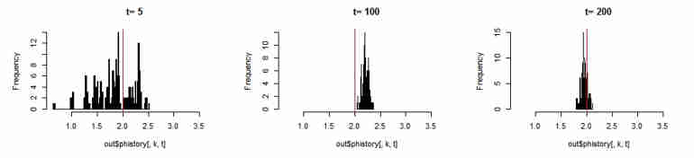
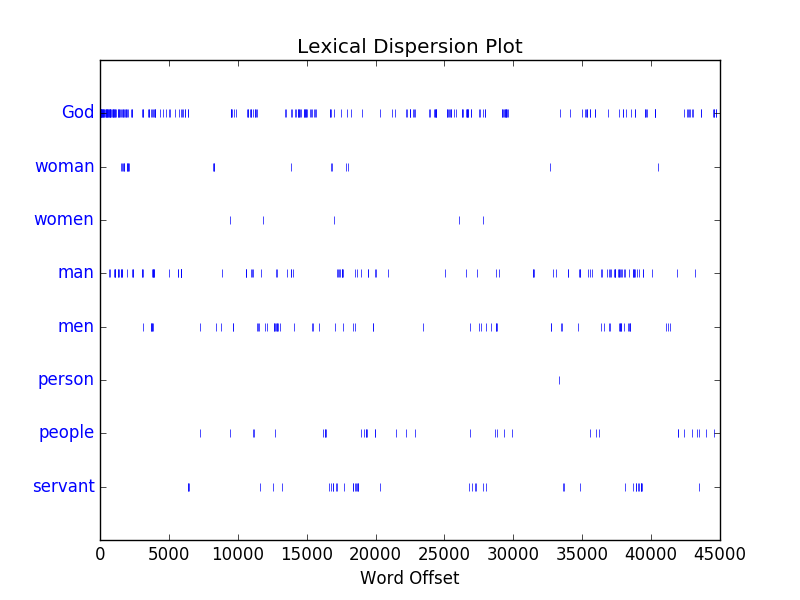

Journey
Day 0
My first online webpage
Hello! My name is Kevin and welcome to my first blog! Here I'll try to post daily thoughts on what I've learned on my path to become a data scientist, software engineer, or developer. I was recommended to do this at the fullstack meetup in LA, which is awesome! My learning rate has exponentially increased by learning to code with others! To get started, I've made my first online webpage using github! I got a working toolbar (but there's little functionality right now). I also learned how to push changes using git! But now it's is 3:45am for me so I should probably sleep.
Day 1
My First Map
Wow, Leaflet and Mapbox unlock new possibilities. I came across Leaflet by doing pair programming at Fullstack LA. Here are some of my favorite views around: the Getty Center (especially right after a storm) and the Santa Monica Pier. Try clicking my markers or the circle! I'll wait. Clicking anywhere else brings up a popup telling you the latitude and longitude. What's your latitude and longitude? Later, I'd like to dive deeper into GeoJSON and Mapbox.
I'm starting to notice that things stay interesting when I don't stick too closely to tutorials and start exploring and tinkering with code. It get's a more personal feel, which also makes it hard to forget. My writing also could use some work :) I'm thinking about making a map based game with interaction between players. Not sure what though since from my understanding, this site is static: no SQL support for now (but it's free) .
Day 2
Making this look pretty with CSS
The previous site was probably the ugliest page posted on the internet. It didn't make too much use of CSS, only HTML and some javascript. By using CSS, we can get something that isn't too bad. The nice thing about web design is that there's lots of free stuff out there. I tweaked a free template that fit my preferences: I wanted an interface that was all in 1 page so you don't need to click around if you don't want to. In the future, I will look at how to load pages incrementally instead of all at once, to make the page run faster. For the technical aspects of software engineering, I'm learning about trees, starting with binary trees. These are useful in binary search trees (BST) to support quick searching, inserting, and deleting, Huffman coding for data compression, and binary search partitioning (used in video games by recursively dividing your image space).
Day 3
Python Day
I spent most of the day driving. That's the cost of living in LA. Anyways, I went to a Python Meetup in Little Tokyo where I met some people and talked about python stuff: Tensorflow, scapy, scikit-learn, jupyter notebook, and all that jazz. Lots of people are interested in data science and that seems to be the leading motivation to learn python.
I explored some functionality that I didn't know existed. I played around with the dir() function which, along with help() allows quick python learning. I also noticed that in python 3, to define a class, you don't need to have object in parenthesis and can just write
class nameOfClass:
rather than
class nameOfClass(object):
But on examining this further, parenthesis is how python uses inheritance, and ommitting them is not recommended. For instance,
class Stack(object):
inherits nothing, while
class Stack(list):
inherits all the methods of list. Using dir(), we see that this new Stack() class has append(), insert(), pop(), sort(), etc.
I also learned more about generators, which, instead of returning a value, can generate entire sequences using 'yield'. This is useful when you know you'll be working with a huge result set and don't need most of the results.
Day 4
A relaxing python day
Since it's Saturday, I'm taking it easy and not pushing myself to code too much. It's always good to take a break once in a while. On weekends, I'll just talk about general things. That said, I briefly learned about python coroutines (functions which allow sequences of inputs through (yield)), although I don't understand their applications yet. I also continued an application for a paid data science grad school opportunity funded by Red Bull. They have this very in depth test at wingfinder.com that is sort of a combination of an IQ and an EQ test. For people who have done some psychology, it uses concepts from the WAIS test, Myers Briggs test, and decision time (it takes longer to make a hard decision than an easier one) to predict if you're intro/extroverted. Here are my shortened results which I'm happy with. The actual results are more in depth, but that's for me :).
Day 5
Useful Python tools
Today I learned how to use 2 very useful tools: scrapy and sqlite. Scrapy is a very powerful web crawling framework. I followed a tutorial on collecting data from a quotes website and outputing a JSON file containing the quotes and authors. I will later attempt to extract news locations, summaries, and try to map the locations onto a map. This will make us more geographically aware and could be useful tool for news reporters. I learned to use Sqlite since I wanted to find a way to use SQL for storing data without the huge overhead of the other traditional methods. For example, a couple of weeks ago, I played around with XAMPP which is a cross platform Apache distribution containing everything you'd need for a web server, but there's a lot to know: PHP, MariaDB, etc. Since I just wanted to practice my database querying abilities, this was a little too much. For the next few days, I'll try to go deeper into Scrapy and saving to different formats (like csv). I put the files in my py_explorations folder on github.
Day 6
Diving deeper into Tensorflow
I haven't posted in about a week since I needed to prepare for some tutoring materials which I do on the side to make a living. I've started 2 courses: a Stanford course on Algorithms on Coursera and an Udacity course on using tensorflow for machine learning. This will ensure that I make at least some steady progress over time. I'm currently working on classification of the noMNIST dataset which is slightly more complicated than the MNIST dataset, where the objective is to get the computer to classify messy handwritten digits. The drawbacks of tensorflow is that it takes extremely long to run, so in the future, I will reduce the dataset sizes. I also played around with the mido library, but it's still pretty complicated to me. I would like to be able to play computer generated music in the future. I also fixed my first ruby class which became my first pull request during the Fullstack Meetup. Even though it was a 1 symbol fix, I'm still happy I noticed it without knowing ruby. I'm continuing the spider crawling script, and am planning to use it on a random wikipedia page. I learned that there is ettiquete that people need to follow when crawling sites (I need to make it seem human by putting delays between crawled pages). I also need to get better at organizing future projects since I'm getting side tracked a lot now. So what I'll do is rank my tasks by priority and split them up into smaller managable problems that can be tackled in a day or so. So tomorrow should be a web crawler day! Hopefully I can do it!
Day 7
Bay Area Deep Learning School 2016
Today I watched a stream of the Bay Area Deep Learning School at Stanford where a bunch of top big data people including Andrew Ng (who is the one who first introduced me to machine learning) are giving talks. He talked about modernizing the bias variance tradeoff concept. Instead of traditionally splitting your data into training, development (validation), and test sets, we should split our data into training, training-development, development, and test sets. The principle is that the underlying distributions of the test and development sets should be the same, when in reality they often aren't. Andrew Ng shares with us his wisdom in starting a career: read papers, replicate results, and don't stall to avoid dirty work (data cleaning, installing stuff, etc.) in parallel. I'm also still trying to run the web crawler (I chose reuters instead), but am in the process of debugging an error.
Day 8
Learning React
I know I said I would try to stay focused, but it was the weekend, and spent the day celebrating my sister's birthday. After coming back home, I somehow got side tracked into learning React (I don't even remember how). I found myself on Codeacademy (which is very noob friendly) and learned an interesting concept called Virtual DOMs. A Document Object Model (DOM) defines the logical structure of documents (like in an HTML file). We can visualize this structure like a tree of objects.

However, rebuilding the entire DOM is inefficient. Instead, it's better to keep changes in a Virtual DOM (a temporary DOM), and then use React to figure out which Virtual DOM objects changed. This is very similar to the diff concept in github, which is way more efficient. I find this kind of thing really interesting since it's sort of like choosing the most efficient algorithm for your problem. Sure, it takes a little (memory?) space, but significantly reduces runtime which is a great tradeoff for most websites. I think I should eventually implement this concept to reduce the load time of this website by loading the page in chunks. Also please let me know if I'm ever completely off about anything! I'd love to be wrong if I can learn something from it.
Day 9
BFS
There's an algorithm called Breadth First Search which tells us how to traverse a tree or graph data structure. Starting at the root node, we completely search the next layer in the structure before proceeding to the next. We need to store pointers for each level to know which nodes to traverse, usually in a stack (First in First Out (FIFO)). This reminds me of my learning habits. Since I'm still relatively new to tech, I feel like I should get a good broad grasp on things, and not specialize too soon. This also reminds me of a research project I was working on in the Cognitive Psychology program at OSU using particle filters to predict some hrf parameters relevant in fMRI imaging. This was coded in R while I was learning R on the fly so the code might be ugly to pros. Particle filters are a Bayesian way of predicting the future based on past predictions recursively. The way they work is by scattering particle-like weights to approximate a probability distribution, and then using the next incoming measurement and these weights to recalibrate the future predictions. This allows new measurements to guide our final prediction in a very accurate way.

This resembles the Agile method. I don't claim to be an expert in Agile (since I've never really worked in a business environment... Hire MEEE!), but from what I understand, one of methodologies called Test Driven Development (TDD) attempts optimize the software development process by having short test cycles and regular refactoring states (to clean up code). I think it's really cool how topics from various fields have the same underlying structure. Even this learning blog follows this evidence-based correcting scheme: I write or code about things I don't know about, then realize I don't know anything, and finally update my understanding by either learning something new or connecting it with something that I already know which updates me as a person.
Just thinking aloud, we can apply this updating scheme to different time scales of our lives. In the short term (~minutes), creativity is the process of broadening the distribution of particles, diversifying your options, while focus allows us to put in time into specific efforts. In intermediate time scales (~hours to days), we have things like tasks of projects. Exploring various avenues like surfing the web, or just exploring interesting topics can be useful as an alternative to continuing a solid routine. For long time scales (~years) it's always good to check long term goals or your current state in life. You can still find life altering decisions, but this is something not everyone chooses to do. Exploring different avenues like making career changes or taking long vacations can work, but there's a larger opportunity cost. I know we hear this all the time, but I think it's really important to actually enjoy even the times where we have to grind and put in lots of work. At least so far, I wouldn't trade my career change phase for anything.
I think I might have a project worthy of a first big project to dive deep into which involves the reuters web crawler. I'm still trying to debug! Don't worry, I didn't forget! I tested 2 individual crawlers that work (1 to get links to the top news articles and another to actually parse the text), but I can't seem to combine it into 1 crawling process. If this works, I can try generalizing the crawler to more news sites.
Day 10
Brief Natural Language Processing with NLTK
I started playing with the NLTK library in python following a tutorial. Later today, I will be attending a talk at Headspace that covers NLP more in depth using libraries like scapy and NLTK. Hope it's fun! Anyways, here's something that I found interesting in the Book of Genesis.

The vertical stripe represents an instance of that word in the text. The word God is mentioned a lot more than others, and is more concentrated at the beginning. Also, women aren't mentioned a lot compared to men, people, or even servants.
For a modern comparison here's a visualization from google's ngram site:
It looks like the whole feminist movement is having an impact in recent years. People don't care about men anymore :)
I tried automatically generating text based on the style of the Book of Genesis, but it looks like the generate() method is broken for now.
The word 'God' makes up .5 percent of the text in the book of Genesis. For comparison, in chat messages, 'lol' makes up 1.5 percent,'haha' makes up .09 percent, and 'hi' is about 1.2 percent. So 'God' was somewhere in between these two (which imo is ALOT).
Day 11
Non-technical Election Ramblings
The coming election in the US has gotten me to think a lot about our future. I have no background in politics or economics, but I feel like these are extremely important issues.
Honest question: Why are you supporting your candidate? I'm always open to new ideas so feel free to message me or talk to me about your opinions.
From what I remember, the people of the US should strive to 1. establish justice, 2. insure domestic tranquility, 3. provide for the common defense, 4. promote general welfare, and 5. secure liberty for ourselves and future generations. This is exactly what the libertarian ideal strives to do. Clinton doesn't satisfy 1,3, and to some extent 5, while Trump does none of the above...
Here are the main issues from my perspective:
============================================
Economics:
The US government is $20 TRILLION dollars in debt. To put that into perspective (as of 2015) the US population has combined has a total of $85 trillion and ALL the land in the US is worth $23 trillion. Our debt is starting to surpass our overall GDP. Trump, Clinton, and Stein will just continue with the increasing debt through needlessly large walls, generally inefficient government spending, or $15 minimum wage which would lead to high hurdles both job seekers and creators. An increased minimum wage will lead to less people having jobs, more homelessness, poverty etc. As time goes on, paying the interest on the national debt will get harder, if not impossible, so this issue takes the highest priority as it effects the whole world and future generations. (This is a current, high priority problem and Johnson and Weld are the only ones proposing viable solutions.)
Social Issues:
Everyone matters. This disqualifies Trump so he isn't worth seriously considering, but since he's rich and famous, people flock to him. The other candidates are good when it comes to this issue. (This only becomes a bad problem if Trump becomes elected. I don't see how people can think torture is ok.)
Energy/Environment/Population:
We wish to increase energy production in a clean, safe way (nuclear) while cutting energy consumption through more efficient practices and steady or decreasing population (both humans and animals). There's only so much food, water, space, and energy each unit of land on Earth can support (carrying capacity). Politicians don't like talking about population dynamics, but it is something governments need to address. The "free market" alternative is war as people will be fighting for scarce resources. We need to be more mindful our actions have on life on this planet.(This is already a problem, but will become more noticable in ~10 years)
Leadership:
Since Clinton thinks she's above the law and lying to the public seems comfortable for her, she also isn't qualified. By being so unliked, she'd have a hard time getting things done in office. Johson is socially awkward, but has a good heart. Same with Stein. The third party candidates are people with good personal qualites: honesty, diligent, willing to admit faults and work on them, and health conscious. Practicing healthy living is actually an important quality as it is an effecive, natural, low-cost way in improving quality of life, setting a good example for the population.
Party System/Media Control:
People should start thinking for themselves instead of blindly following the outdated 2 party system. By supporting other nonpopular parties, you weaken the control of the media that has had complete control of elections past elections. People often say "They have no chance of winning" just based on polls or "you're just throwing your vote away". Why even vote for something you don't want? It's like if there's 2 unhealthy fastfood chains nearby, but you have the option of going to the grocery store to buy healthy ingredients to cook, which would you choose? Sure, if you want the fast food, go for it! It's your choice. But if you care about the future and want to make an improvement that lasts, go for the healthy choice. Supporting whatever you feel is right, independent of the popularity of the other choices is the ethical thing to do.
AI/Future proofing:
With advances in machine learning, big data, and other tech, there's less demand for human labor. A universal basic income (which isn't the same as minimum wage) might be something to consider in the future, with social restructuring from the government. Volunteering, open-source work, crowd-funding etc. should gain popularity. This will lead to inflation, but it might be a non-dangerous type since at this time, we will probably be producing value at an exponential rate. In order to implement this, the US government has to get to the point of not owing people. We would also need to tie this into popluation control. Johnson encourages the idea of uber everything which is the way of the future. I'm still unsure about this since this is unknown territory and there are lots of variables to consider. (This will be important in ~10 years)
===========================================
Even though Johnson is weird and bad with names, he's willing to learn from his very experienced running-mate Bill Weld and the general public. Gary is transparent and open to new and better ideas. Bill Weld is someone I respect who I'd like to have some voice in maintaining the country. This is why I'm going to go with Johson and Weld.
Week 3
Django
From now own, I'll try to post weekly, since I couldn't keep up with the daily posts. This week, I started writing a Django poll app, following the tutorial in the django docs. The learning curve is higher than the standard html/css/js route, but I think it's worth it since it teaches good practice like catching exceptions and page redirecting. The tutorial used sqlite3, but I think I should try to implement the backend using postgresql, just for the learning experience. I'm currently learning how to create automated tests, which I've never done before. This should save time in the long run.
Last week, I did a quick comparison between different scikit classifiers on a small fake dataset to predict the gender of a person based on height, weight, and shoe size (in uk measurments). Classification is a type of supervised learning where you have a training set with known features and labels and you want to predict the labels of an unknown test set. In classification, the labels are discrete in contrast to regression where the labels are continuous. Since the dataset was small (around 10 data points), I used cross-validation (which splits the training set, trains the model on a large subpiece, then tests on the remaining fold) to determine the best model, which tended to be the Multilayer Perceptron.
Next week, I will try to do some unsupervised learning which aims to identify structure in the data without any knowledge of the correct labels. For example, we can try to identify clusters in a population, or learn sentence structure, with only data.
TODO (ranked from highest priority to lowest): Automated testing, unsupervised learing, postgresql
Week 4
Unsupervised learning (clustering), and parameter tuning
This week I finished going through the sklearn tutorial on clustering. It turns out that the DBSCAN algorithm tends to be the best so this will be my go to clustering algorithm in the future. I also finally learned how to tune the parameters of a machine learning model. Machine learning models tend to have hyper-parameters which dictate how accurate the model can be. The two main ways of approaching the problem are grid search and randomized search. Grid search literally tries all possibilities of a parameter set you give it. This is an exhaustive method, but can take a long time, especially if you have many parameters to tune. Randomized search, searches parameters sampled through a distribution which may not cover every possibility like grid search.
TODO (ranked from highest priority to lowest): supervised learning, Automated testing, postgresql
Week 5
Automated Testing for django polling app and data visualization
I finally finished the Django tutorial yay! The tutorial taught me to do automated testing which prevents future errors from occuring as you develop your code. Additionally, I practiced and learned a bunch of data visualization techniques for visualizing high dimensional datasets. Simple techniques like histograms, pie charts, scatterplots, and pairwise plots are all done through matplotlib. Some more advanced plots I learned are the andrews curve which projects the data onto a 1 dimensional vector using fourier transforms (which is a genius idea to separate different classes of data). However, normalization should probably be done before had to preprocess the data and make the visualization within a certain bounding region. Another type of plot I learned was the parallel coordinates plot which has on the horizontal axes, different feature dimensions. Each set of collected line segments represents 1 data point and allows us to visually determine which classes are more similar than others in terms of certain features. Here's the github link.
TODO (ranked from highest priority to lowest): handling missing data using XGBoost, GIS, postgresql